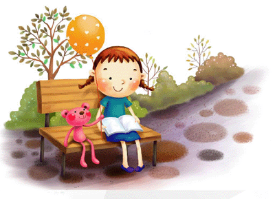
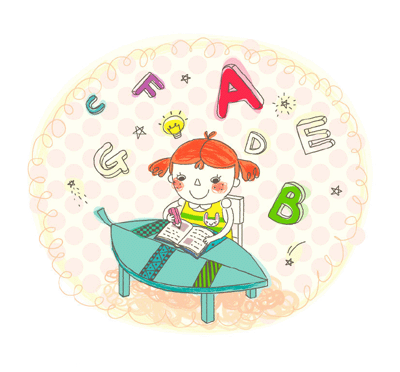

Hobbies and Interests:
Since the childhood, I enjoy thinking and always try to simplify complex problems by an easier method. When golden ideas come into my mind, I always record them in a notebook. So far, there are more than one hundred ideas in my notebook and I have made some of them come true, like a feet-controlled fan, a Z-shape anti-crowded frame used on the bus and so on..
I started to learn to play the piano when I was 5 years old. After graduated from my primary school, I won the amateur top level(level 10) certificate of piano in our country.
I like singing and many people said that I have a special voice.I also composed several songs and lyrics by myself.
I like dancing. I took dance classes during my primary school. I have performed on the openning ceremory of China University Games.
I can also play the Chinese zither. I like the culture of this instrument and the feeling.
I can play the flute. My father play it very well and he tougnt me. I like the wispy flutes.
I like reading books, from which I can absorb a lot of knowlodge and informations.

I like writing. I always write essays, articles, novels and so on.
